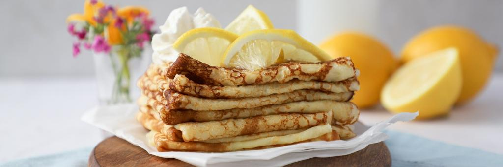

Dutch Pancakes

Description
These Dutch Pancakes are like crepes; thin pancakes that can be enjoyed on
their own or rolled around other delicious ingredients.
ingredient
- 4 eggs
- ¼ cup sugar
- 2 cups all-purpose flour
- 4 cups milk
- ¼ cup oil
- maple syrup
Steps
-
Whisk together eggs and sugar in a large bowl. Whisk in flour, milk and oil.
(Ingredients can also be combined in a blender and processed just until
blended.)
-
For each pancake, pour 3 to 4 tbsp (45 to 60 mL) batter into a greased crepe
pan or small (8-inch/20cm) frying pan, swirling it over bottom of pan to
cover completely. Cook over medium heat until bottom of pancake is lightly
browned. Flip over to cook other side briefly. Keep pancakes warm while
cooking remaining batter.
- Roll up or fold and serve with maple syrup.
- Makes about 16 thin pancakes.